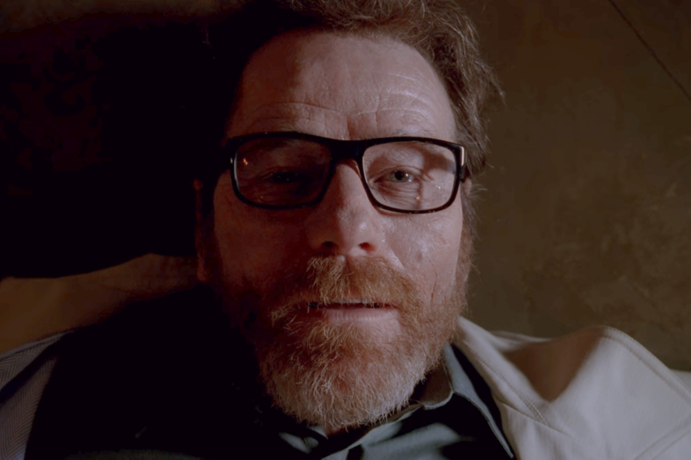

Walter White
 Imagem do site: R7
Imagem do site: R7
Walter Hartwell White é um personagem fictício da série de televisão dramática norte-americana Breaking Bad. Foi criado por Vince Gilligan e é interpretado por Bryan Cranston. Walter era um químico promissor e um dos fundadores da bilionária empresa Gray Matter Technologies, porém logo saiu dela, vendendo suas partes nas ações por US$ 5 mil por razões pessoais, tornando-se um professor de química infeliz e desiludido. Após ser diagnosticado com câncer pulmonar nível 3, resolve fabricar metanfetamina para garantir a segurança financeira de sua família após sua morte.
Desesperado com o fato que sua família irá passar necessidades após sua morte, decide que fará qualquer coisa para que não sofram com isso. Impulsionado pelo desejo, adrenalina e medo de não oferecer dignidade a sua família, aproveita de suas habilidades e conhecimentos em química, a favor do crime. Com o decorrer da série, Walter gradualmente se torna sombrio e mais perverso, sofrendo uma significativa mudança psicológica em relação ao começo da série.
Walter e Heisenberg ficaram marcados para sempre na história dos melhores personagens da história.
 Imagem do site: Olhar Digital
Imagem do site: Olhar Digital
Biografia
Um personagem extremamente complexo, Breaking Bad gira em torno da transformação de Walter White de um homem de família gentil e simpático em um chefão das drogas perigoso e sociopata. Também mostra sua personalidade e motivações em constante mudança à medida que se tornam mais sombrias e egoístas à medida que a série continua. Sua virada para a vilania e a revelação gradual da escuridão que estava dentro dele ao longo da série o levou a ser comumente comparado pelos críticos a vários vilões de Shakespeare, mais proeminentemente Macbeth .
No início, após ser diagnosticado com câncer de pulmão, a motivação declarada de Walter era ganhar dinheiro suficiente para deixar para sua família. Embora isso fosse verdade até certo ponto, buracos podiam ser vistos nessa motivação já na primeira temporada, onde ele recusou o trabalho de sete dígitos de seus ex-parceiros de negócios por orgulho. Embora o dinheiro que ele poderia deixar para trás continuasse a ser um ponto importante para ele no resto da história, ele gradualmente revela que gosta sinceramente das emoções e sentimentos de poder que ser um criminoso traz, e ele tem tanto orgulho de sua quase perfeita metanfetamina azul. Ele menciona no início da série que nunca sentiu que tinha algo a dizer em sua vida, e então seu trabalho como traficante de drogas é a primeira vez que ele tem o controle. Ele também sente que está compensando sua decisão precipitada de deixar seus ex-parceiros de negócios por uma compra de US$ 5.000, abandonando uma empresa que agora vale bilhões de dólares, criando um império de metanfetamina para dar a si mesmo uma sensação semelhante. Ele revela a Skyler no final que tudo foi feito por ele mesmo, pois isso o fez se sentir vivo.
Walter era um homem extremamente orgulhoso e arrogante, a ponto de ser narcisista. Quase tudo o que ele faz é impulsionado por seu enorme ego, levando um homem muito inteligente a tomar decisões muito estúpidas. Isso varia de recusar a oferta de trabalho acima mencionada a dar pistas para seu cunhado, Hank, de que seu principal suspeito por ser Heisenberg, provavelmente não era o verdadeiro Heisenberg, não querendo que mais ninguém levasse crédito por seu trabalho, mesmo em o risco de ser capturado mais tarde. Como resultado de seu ego, Walter recebe críticas extremamente mal; isso é melhor mostrado quando Mike o chama por ligar e matar Gus Fring porque ele pensou que poderia administrar seus negócios tão bem, mas acabou por estar errado. Enquanto ele estava absolutamente certo, Walter ficou tão irritado que atirou e matou Mike em uma raiva movida pelo ego.
 Imagem do site: Mix de Series
Imagem do site: Mix de Series
À medida que a série avançava, Walter tornou-se mais implacável. O homem que soluçou enquanto estrangulava Krazy 8 em legítima defesa foi capaz de envenenar uma criança sem remorso para começar seus planos finais contra Gus - mesmo ignorando a morte de Drew Sharp enquanto ele assobiava no trabalho depois que seu desaparecimento foi anunciado em as notícias. A decadência de sua moralidade foi notada por Skyler e Jesse, deixando Skyler aterrorizada com ele apesar de ajudá-lo antes, e perturbando Jesse a querer deixar o comércio de metanfetamina completamente.
 Imagem do site: IMDB
Imagem do site: IMDB
Apesar de sua crueldade, Walter ainda se preocupava profundamente com sua família, ficando irritado com a ideia da sugestão de Saul de matar Hank depois que ele percebeu quem era Walter. No episódio piloto, ele até agrediu um atleta por tirar sarro da paralisia cerebral de seu filho. Antes de Jack matar Hank, Walter implorou e negociou pela vida de Hank e ficou totalmente quebrado quando Jack disparou o tiro. Se vingar de Jack se tornou uma de suas motivações motrizes no episódio final da série. Ele também foi muito contra a ideia de matar Jesse até que parecesse necessário para ele, e no final levou um tiro para salvar a vida de Jesse. Isso não o impediu de ser emocionalmente abusivo e manipulador em relação a eles. Seu relacionamento com Jesse, em particular, era como uma figura paterna abusiva que manteve Jesse leal a ele através de manipulação e chantagem.
Por mais que ele amasse sua família, fica claro que ele ama mais uma coisa. Enquanto está morrendo, ele passeia pelo laboratório de metanfetamina, examinando o equipamento com carinho, significando que seu único amor verdadeiro era sua preciosa metanfetamina azul, o império que ele construiu.
 Imagem do site: TVGuide